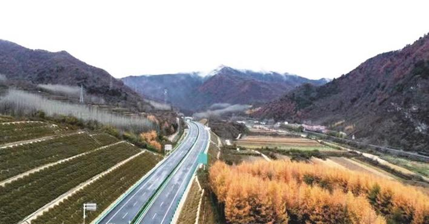

您好，欢迎来到中国高速公路网—21世纪公路网！
 来源：陕西日报
来源：陕西日报
 时间：2021-01-01
时间：2021-01-01
五年，是历史长河里极为短暂的一瞬，但对一个行业的发展，则是值得铭记的征程。盘点“十三五”，陕西交通人又将会交出一份怎样的答卷。
安康至岚皋高速公路。
“十三五”是我省高速公路发展极不平凡、极具里程碑意义的五年。随着旬邑至凤翔高速公路彬州至麟游段的建成通车，我们顺利实现了“县县通高速”这一历史性突破，高速公路通车总里程达到6100多公里，如期兑现了对三秦人民许下的庄严承诺。
“十三五”：成之惟艰
“十三五”时期，我省高速公路持续保持快速发展势头，发展质量效益不断提升，高速公路服务地方发展、改善百姓出行、拉动有效投资作用更加突出。简单来说，可以用六个更加来概括。
路网覆盖更加广泛，群众出行更加便捷。“十三五”时期，我省新建成通车高速公路21个（段），新增通车里程约1100公里，省境内国家高速公路网中待建路段全部开工建设，实现了“县县通高速”目标，打通了26个出省通道，构筑起与周边中心城市的“一日交通圈”。今年最后通达高速公路的8个县全部为革命老区县、集中连片特困县，高速公路均等化服务更加明显，彻底解决了全省人民快速出行问题。
稳投资作用更加突出，投资完成持续攀升。“十三五”时期，我省高速公路建设完成投资1740亿元，年均增长率达到10%左右。特别是今年受疫情影响，在固定资产投资增幅减缓的情况下，高速公路投资实现稳步向前，预计全年完成投资约480亿元，较去年增加约11%，约占全年交通投资72.5%，高速公路建设已成为拉动交通投资的“主战场”。
服务能力更加高效，百姓获得感更强。全省高速公路ETC覆盖率由“十二五”末的94.5%提高到100%，实现ETC全国联网并撤销全部省界收费站，使用者更加便捷，通行效率更高。施行高速公路差异化收费政策，努力降低企业运输成本。交通运行感知监测能力全面提升，高速公路重点路段视频监测全覆盖。坚决落实“绿色通道”、重大节假日小客车免费政策，为广大群众营造了畅安舒美的出行环境。
建设模式更加多样，筹资难题得到有效缓解。“十三五”时期，按照中央及省上拓展融资渠道，控制政府债务风险的要求，我省大力推动PPP模式实施高速公路项目，新开工的24个项目中，13个采用PPP模式投资建设，建设里程987公里，占新开工项目总里程的58.7%，极大缓解了我省高速公路建设筹资难题，推动我省高速公路持续健康发展。
建设管理更加科学，建设体制改革不断深入。“十三五”时期，我省6个高速公路项目分别开展了自管模式、改进的传统管理模式和设计施工总承包模式等三项改革试点工作。大大简化了办事程序，工作效率显著提高，实现设计和施工深度融合，有效控制了工程投资，形成了可复制、可推广的改革试点成果。
生态建设更加环保，坚定贯彻新发展理念。“十三五”时期，我们深入贯彻“绿色公路”“品质工程”等理念，大规模研究推广应用新材料、新技术、新工艺，建设了一大批具有典型示范意义的精品优质工程，多个项目被交通运输部列为示范项目，承担交通运输部“平安百年品质工程”隧道技术攻关的课题研究。推动绿色公路建设，加大秦岭范围内交通建设项目生态环境监管力度，平利至镇坪高速公路被确定为全国第二批绿色公路建设典型示范工程，建筑垃圾再生材料在公路工程中的应用技术在全国产生了重要的影响力。
“十四五”：未来可期
“十四五”时期，是开启全面建设社会主义现代化国家新征程的第一个五年，也是全面推进交通强国建设的重要起步期。我们将按照立足新发展阶段、贯彻新发展理念、构建新发展格局的要求，加快推动我省高速公路高质量发展，进一步提升服务品质，努力满足人民日益增长的美好生活需要。
未来五年，我省高速公路建设规模预计将超过1900公里，其中续建约1100公里，新开工约800公里，通车总里程将突破7000公里，省际出口数量将达到29个。围绕高速公路建设运营，重点实施以下五大工程。
效能提升工程。以大西安为中心，大力推进国家高速公路扩能改造工程，解决早期建成的高速公路拥堵问题，全面提升关中地区高速公路通行能力，加快构建环绕大西安的高速公路环线体系，促进西咸等区域一体化发展，服务关中平原城市群发展。积极推进福银线、包茂线、连霍线等既有国家高速公路扩能改造。
通道畅通工程。积极加强与邻省对接，主动协调推进省际通道项目前期，加快打通高速出省大通道，畅通省际出口，提升路网的开放度，持续巩固向西开放门户地位。建设吴起至华池（陕甘界）、岚皋至陕渝界、洛南至卢氏（陕豫界）、长武至灵台（陕甘界）等高速公路。全面建成我省境内既有规划的国家高速公路，新增省际出口3个以上。
服务强化工程。依托西安绕城高速、连霍高速等交通量较大路段，在充分利用现有道路基础资源情况下，通过智能化手段，提升路段通行能力和服务品质。按照“一区一特色，区区有亮点”的思路，将服务区打造成为集停车、休憩、加油等传统服务区功能，和商贸、文化传播、科技体验等业态于一体的综合体，进一步提升高速公路运营服务质量。
加密连通工程。服务地方经济发展，不断提高路网密度，提升路网衔接转换和迂回连接水平，提高路网可靠度和抗灾能力。有序实施韩城至黄龙、眉县至太白、麟游至法门寺、马家堡至泾阳、西高新至天桥等高速公路建设。
智慧交通工程。开展高速公路建设运营智能化试点示范，推进智能化高速公路建设。研究推广智能网联高速公路、车路协同、重大基础设施智能联网监测与预警、高速公路自由流收费等运营管理技术的试点应用。加大高速公路建设领域节能环保技术研发与推广应用，推动资源集约利用，持续推进我省高速公路绿色低碳发展。 （张力峰）
陕西：六千公里高速路赋能追赶超越
西乡至镇巴高速公路。
2015年2月，习近平总书记来陕视察时，提出追赶超越定位和“五个扎实”要求，为陕西发展指明了前进方向和根本遵循。
五年多来，陕西交通牢记习近平总书记殷殷嘱托，紧盯追赶超越目标，众志成城攻坚克难，全省完成交通投资4600亿元左右，较“十二五”增长15%，全省公路总里程突破18万公里；5年累计建成高速公路1105公里，全省高速公路通车总里程突破6000公里，省际出口达到26个，圆满完成“县县通高速”规划目标，构筑起与周边中心城市的“一日交通圈”。
回眸历史，这片厚土曾诞生了我国“最早的高速公路”秦直道，700多公里的宽阔坦途为抵御外族入侵、南北商贸往来发挥了巨大保障作用；如今，6000公里高速公路和日益完善的公路、航空、铁路，形成了功能强大、方便快捷的综合交通运输网络，让陕西建设西部强省的呼声有了更足的底气。
这五年，陕西交通人只争朝夕，不负韶华，路网纵横、车轮滚滚，不仅让三秦大地旧貌换新颜，也为追赶超越注入了澎湃动力。
西安咸阳北环线建筑垃圾应用——移动式箭簇镞垃圾再生材料加工场。
创新引领 “智造”品质坦途
安岚高速公路、西镇高速公路桥隧比高达90%以上；宝坪高速公路世界建设规模第一的15公里六车道天台山隧道；合铜高速公路桥梁多达67座，仅墩高在80米以上的高墩大跨桥梁就有13座，其中最高墩达144米……
近几年，陕西交通建设项目大多位于陕南秦巴山区、陕北黄土沟壑区，地形地质条件复杂，特殊结构桥梁、特殊地质长大隧道等复杂工程增多，进一步增加了工程质量控制风险。
高速公路推动各地产业发展。
陕西交通运输行业以“品质工程”创建为载体，以质量问题为抓手，通过加强精细化管理、实施标准化施工、应用四新技术等措施，彻底消除质量通病。省交通运输厅出台了《陕西省“品质工程”示范创建实施方案》《陕西省公路水运工程监理信用评价实施细则（试行）》等制度办法，建立完善了一整套涵盖工程质量管理全过程的质量管理制度体系；各建设项目牢固树立全周期成本理念，统筹抓好设计、建设、运营全过程质量控制，着力打造“品质工程”。
技术创新是提升工程品质的一大法宝。为了攻克秦岭天台山隧道长15公里，最大埋深达973米等建设难题，宝坪管理处积极推广“四新”技术，推行机械化配套施工，逐步实现“机械化换人、自动化减人”和信息化管理，全面提升项目安全管理效能和工程建设品质。全线施工单位共投入新设备319台（套），推广新技术投资超过1.5亿元，应用的隧道衬砌拱顶带模注浆施工工法、隧道开挖机械化配套施工工法、隧道进洞“零开挖”施工工法等9项技术入选了《陕西省交通建设品质工程优秀技术成果汇编》。

太白至凤县高速公路山区段。
这样的技术创新、工艺工法改进在建设一线蔚然成风。2018年，省交通运输厅将小构件集中预制、预制箱梁整体液压模板等23项优秀技术成果在全省推广。同时，推广桥梁工程成套成系列的自动化、智能化施工设备和隧道工程多臂凿岩台车、湿喷机械手等专用施工机械设备的应用。
新技术新机械新工艺的投用，不仅让陕西高速公路快速延伸，也使建设品质不断提升，陕西长大隧道建设与管理、高墩大跨桥梁建设、建筑垃圾填筑路基等一批自主先进技术日臻成熟，为建设西部强省和人民群众便利出行，创造了快速、便捷、舒适、安全的公路交通条件。
变废为宝 呵护碧水蓝天
“我为这1872亩耕田鼓掌！”
今年9月，在陕西延安至子长高速公路采风结束后，省作家协会副主席莫伸特意撰文写道。延子高速公路占用土地6120亩，其中耕地2050亩，建成后最终恢复耕地1872亩。莫伸感叹：“这1872亩新建农田，体现出如今高速公路建设中的一种新理念，这是最可贵、最令人振奋，也最值得推广的。”
高速公路建设一头连着青山绿水，一头连着人民群众的美好生活，保护生态环境就是保障民生。
“十三五”以来，陕西交通坚持绿色发展、绿色惠民，低碳、环保、节约、节能已经成为陕西高速公路建设的“主旋律”。陕西省交通运输厅制定了绿色公路建设实施方案，并确定了平利至镇坪、太白至凤县、西安外环高速（南段）、绥德至延川等4个高速公路项目为全省第一批绿色公路建设典型示范工程。建设者从项目规划、设计、建设、运营、管理、服务全过程落实绿色公路建设理念，明确目标、夯实责任、狠抓落实，努力实现公路建设“资源节约、生态环保、节能高效、服务提升”等4个方面的突破。
安康至岚皋高速公路跨汉江段。
在黄土高原，废旧轮胎、隧道弃渣、粉煤灰成为黄延高速公路重要的建设用料，共消耗废旧轮胎约579万条，减少二氧化碳排放约3.4万吨。该工程被列为交通运输部“绿色公路示范项目”，涵盖绿色能源应用、绿色施工技术、绿色服务区、智慧公路、绿色环保和资源循环利用等六大类33项。
在关中平原，建筑垃圾资源化利用是西安外环高速公路南段一大亮点，通过地基处理、路基填筑、路面基层、构件预制及临建工程，应用的建筑垃圾再生材料达305万立方米（550万吨）。此前，陕西已依托西安外环高速公路北段项目开展了“建筑垃圾再生材料在公路工程大规模应用技术”，形成了研究成果、施工指南和相关标准，具备了全面推广的条件。
在秦岭深处，平镇高速开展了秦巴山区绿色公路建设成套关键技术体系和标准研究，钢板组合梁桥标准化、装配化施工关键技术研究，脱泥—净化一体机处理桥梁桩基施工泥浆技术研究等五项课题研究，为指导秦巴山区绿色公路建设评价指标体系的建立提供理论依据。
一条条内实外美的高速公路蜿蜒盘旋，和谐地融入青山绿水，勾勒出陕西经济发展的大动脉；一个个偏远小县迎来了“高速时代”，各种产业迸发出新的生机和活力；一座座古老乡村悄然蝶变，人气高了、财气旺了……
保障和改善民生没有终点，只有连续不断的新起点。
未来5年，三秦父老对交通依旧期待满满。责任在肩，陕西交通人将阔步新征程，奋进新时代，继续为富民强省当好先锋。
【编辑：任燕 QQ：360638367；TEL：13146474233】
【审核：耿茁、孙婧】
 微信公众号
微信公众号
 微信订阅号
微信订阅号